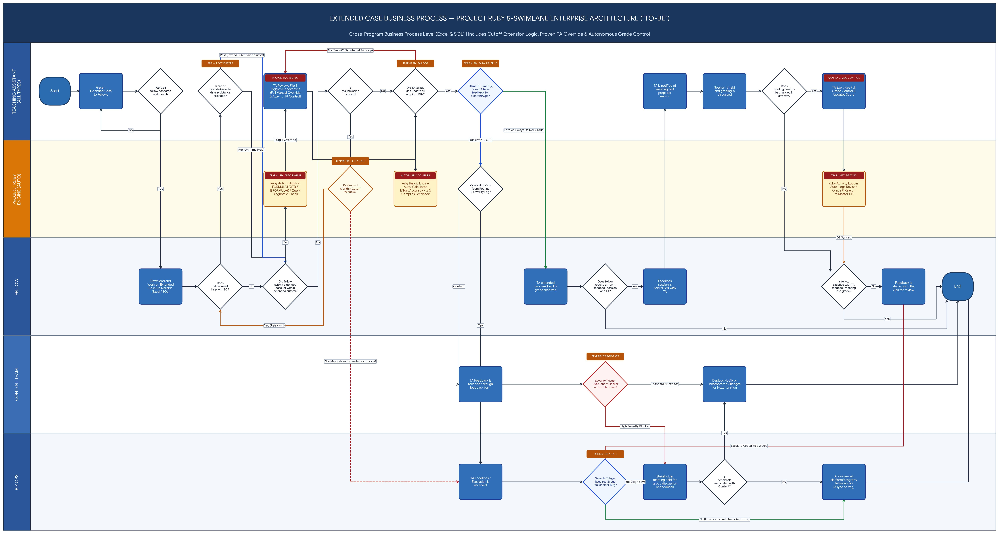

Correlation One / Flagship project
Project Ruby.
Rubric and curriculum design, with assessment workflows built around educator judgment.
01 / The challenge
Assess complex work.
Support good judgment.
Extended Cases ask learners to apply practical Excel and SQL skills. Assessing them requires consistent criteria, useful feedback, and room for valid alternative approaches. The wider process also needs ownership for curriculum, learner-support, and program issues.
02 / My contribution
Four rubrics.
Independent authorship.
I independently recreated the rubrics for all four Extended Cases, EC1 through EC4. I also helped audit EC1, EC2, and EC3 materials and reviewed whether the assessment process would work as intended.
My Correlation One work also included serving as a Statistics Co-Lead Instructor, co-leading the program’s first statistics class sessions and delivering nine Jupyter Notebook business cases. See the teaching milestone and recording ↗.
The wider initiative involved collaboration with Frankie Law and Program Manager Ivan Lamas-Sanchez on grading support and curriculum quality. The project handoff also documents assessment procedures, EC4 SQL review, and cross-functional workflow design.
03 / Excel grading support
Diagnostics inform.
Educators decide.
The EC1 workbook separates formula-text and formula-presence checks from TA-controlled point assignment. Separate Boolean rubric controls feed point formulas, allowing the educator to make the scoring decision.
A diagnostic flag can prompt review without determining the score by itself, supporting educator judgment when a correct answer uses an unexpected approach.
Verified in the source: separate diagnostic and scoring formulas. Native Excel control interaction and recalculation were not tested. This file does not establish an automated feedback compiler, override logger, or database synchronization.
04 / SQL review
Different queries.
Equivalent solutions.
The EC4 archive contains a Jupyter/SQLite environment, an AdventureWorks database, solution cells, and notes on alternative query approaches, including CTE and subquery variations.
The archive identifies a grader variant, but the inspected notebook does not establish a complete automatic scoring system. Automated acceptance of equivalent queries and live LMS integration remain unverified.
05 / Future-state design
Five lanes.
Clear ownership.
The proposed operating model maps responsibilities across the Teaching Assistant, Project Ruby Engine, Fellow, Content Team, and Business Operations. It connects submission and review with feedback, coaching, curriculum QA, and escalation.

Keep learner feedback moving
A parallel route separates grade delivery from internal quality reporting, so curriculum or operational follow-up has its own owner.
Handle exceptions explicitly
The model routes deadline extensions back into submission tracking, returns incomplete grading tasks to the TA, and escalates retry and appeal exceptions.
The historical rubric and audit work provides the project context. The diagram extends that context into a future-state design; it is not evidence that every automated step was implemented.
06 / Evidence and scope
Design contributions.
Clear evidence boundaries.
Sources reviewed include the EC1 instructor workbook, EC4 sandbox archive, final handoff, and supplied future-state diagram. Rubric authorship and EC1 through EC3 audit contributions reflect my first-person account.
The EC2 and EC3 originals and historical workflow can extend the evidence later. Measured time savings, error reduction, and cross-program deployment are not claimed.
07 / Continue exploring